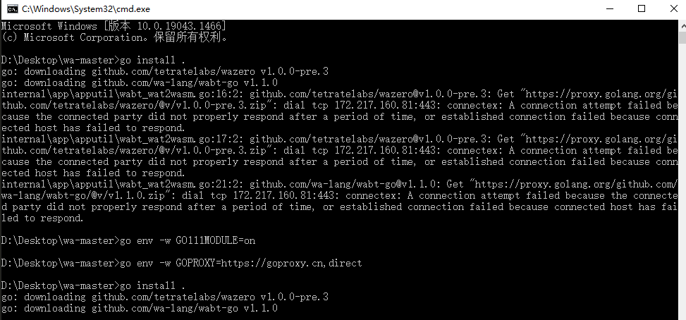

wa-lang windows系统初体验
按照官网的执行的install，嗯安装不上，应该是被墙了？
不过翻墙后仍然报错!!
于是从gitee上下载了源代码,执行了go install .，报错如下

于是网上找了下国内的镜像仓库，安装成功，但是 wa 不是内部或外部命令
在项目目录下创建一个wa.cmd来执行下go run main.go %*,这样也能愉快的执行wa命令咯,效果如下
后来检查了下 install 的时候会在 $home/go/bin目录创建 wa.exe的,配置下这个目录的地址到path就行了,最根本的原因是系统中的 $GO_PATH没有设置对。